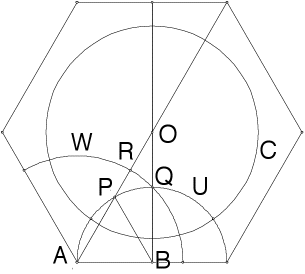

Step 3, part 1 proof
|  |
| The inverse Q' of Q in C lies on the ray OQ. |
| The circle U is orthogonal to C and passes through Q, so Q' lies on U. |
| In fact, Q' is one of the two intersections of the ray OQ and U. |
| The polar of Q, the locus of all centers of circles passing through Q and orthogonal to C, is the perpendicular bisector of the segment determined by Q and Q'. |
| This is precisely the line through A and B. |
| Hence the circle with center A and passing through Q will be orthogonal to C and thus a geodesic for the Poincare disc. |
Return to Step 3.